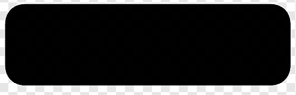
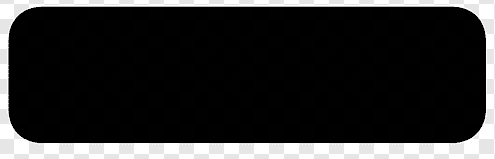

Tentang Kami
Sejarah Pondok Pesantren Al-Munawwir
-

1991 M
Berdirinya Pondok Pesantren Al-Munawwir
Pondok Pesantren Al Munawwir didirikan oleh KH. Muhammad Munawwir bin Abdullah Rosyad pada tanggal 15 November 1911 M, sejak awal berdiri dan berkembangnya pondok pesantren ini semula bernama pondok pesantren Krapyak, karena memang terletak di dusun Krapyak.
-
1976-an
Penambahan Nama
Nama pondok pesantren tersebut ditambah ‘Al-Munawwir’. Penambahan nama ini bertujuan untuk mengenang pendirinya yaitu KH. M. Munawwir. Dan Al-Qur’anlah sebagai ciri khas pendidikan di pesantren ini di awal berdirinya.
-
Be Part
Of Our
Story!
 dan
zoom out .
dan
zoom out .